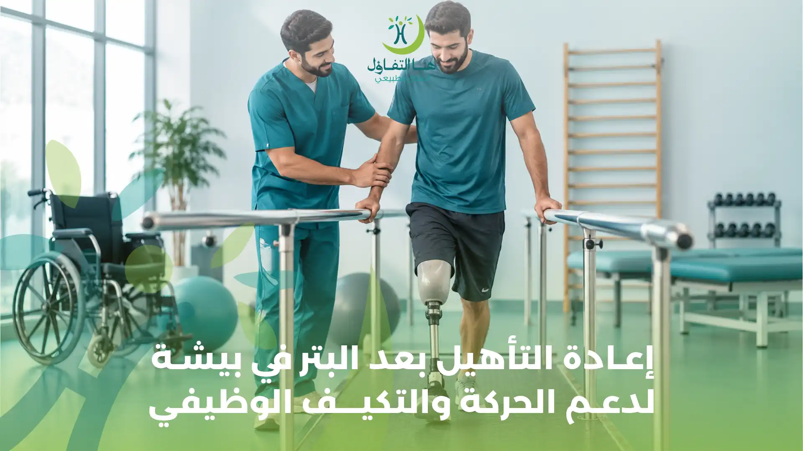

يمثل فقدان أحد الأطراف نتيجة البتر مرحلة مهمة في حياة الشخص، إذ قد تتغير معها قدرته على الحركة والاعتماد على النفس وأداء الأنشطة اليومية، مثل المشي والوقوف وصعود الدرج واستخدام اليدين وممارسة العمل والأنشطة الاجتماعية. ولا تقتصر رحلة التعافي بعد البتر على التئام الجرح والتعافي من الجراحة فقط، بل تحتاج في كثير من الحالات إلى برنامج متكامل من العلاج الطبيعي والتأهيل الحركي والوظيفي لمساعدة الشخص على التكيف مع التغيرات الجديدة واستعادة أكبر قدر ممكن من الاستقلالية.
ولهذا يبحث كثير من المرضى وأسرهم عن إعادة التأهيل بعد البتر في بيشة، وعن أفضل طرق العلاج الطبيعي بعد بتر الأطراف، وتمارين تقوية العضلات، والتدريب على المشي بعد بتر الساق، والتأهيل باستخدام الطرف الصناعي، بالإضافة إلى طرق التعامل مع الألم والتورم وتحسين التوازن والقدرة على الحركة.
ويختلف برنامج تأهيل مبتوري الأطراف من شخص إلى آخر حسب موضع البتر، سواء كان بترًا في الطرف السفلي مثل القدم أو الساق أو الفخذ، أو بترًا في الطرف العلوي مثل اليد أو الذراع، وكذلك حسب الحالة الصحية العامة وسبب البتر ومستوى القوة العضلية والقدرات الوظيفية.
ويهدف العلاج الطبيعي بعد البتر إلى مساعدة المريض على استعادة الحركة بصورة تدريجية، والحفاظ على مرونة المفاصل وقوة العضلات، وتحسين التوازن والانتقال بين الأوضاع المختلفة، والتدرب على استخدام الطرف الصناعي عندما يكون مناسبًا ومتاحًا.
في مركز هنا التفاؤل للعلاج الطبيعي والتأهيل الطبي في بيشة، يمكن للراغبين في خدمات العلاج الطبيعي والتأهيل الاستفسار عن الخدمات المتاحة ومدى مناسبتها لاحتياجاتهم، مع أهمية تحديد الحالة الصحية ومرحلة التعافي قبل وضع أي برنامج علاجي.
ما المقصود بإعادة التأهيل بعد البتر؟
إعادة التأهيل بعد البتر هي مجموعة من التدخلات العلاجية والحركية والوظيفية التي تهدف إلى مساعدة الشخص على التكيف مع فقدان الطرف وتحسين قدرته على أداء الأنشطة اليومية.
ولا يقتصر التأهيل على التدريب على المشي باستخدام الطرف الصناعي، بل يبدأ الاهتمام بالحركة والوظائف اليومية في مرحلة مبكرة بعد الجراحة، وفقًا لحالة المريض وتعليمات الفريق الطبي.
وقد يتضمن برنامج التأهيل عدة جوانب، منها:
- متابعة الحركة والقدرة الوظيفية بعد الجراحة.
- الحفاظ على مدى حركة المفاصل ومنع التيبس والتقلصات.
- تقوية العضلات وتحسين التحمل البدني.
- التعامل مع التورم والعناية بالطرف المتبقي وفق التوجيهات الطبية.
- التدريب على الانتقال من السرير إلى الكرسي المتحرك.
- تحسين التوازن والتحكم في وضع الجسم.
- التدريب على المشي باستخدام وسائل المساعدة أو الطرف الصناعي عند ملاءمته.
- تطوير القدرة على أداء الأنشطة اليومية بصورة أكثر استقلالية.
- تقديم الدعم النفسي والتكيف مع التغيرات الجسدية والوظيفية.
ويتم تحديد أهداف التأهيل بناءً على احتياجات كل مريض، فقد يكون الهدف لدى بعض الأشخاص هو المشي باستخدام طرف صناعي، بينما يكون الهدف لدى آخرين تحسين التنقل بالكرسي المتحرك أو استخدام الطرف العلوي في الأنشطة اليومية أو استعادة القدرة على الاعتماد على النفس.
أسباب بتر الأطراف والحالات التي تحتاج إلى التأهيل
قد يحدث البتر نتيجة ظروف طبية أو إصابات مختلفة، ويعتمد مسار التأهيل على السبب الذي أدى إلى فقدان الطرف والحالة الصحية العامة للمريض.
1. مضاعفات مرض السكري
قد يؤدي مرض السكري لدى بعض الأشخاص إلى تلف الأعصاب الطرفية وضعف الإحساس في القدمين، إلى جانب مشكلات الدورة الدموية التي قد تؤثر في التئام الجروح. وقد تتطور بعض إصابات القدم أو القروح إلى التهابات شديدة أو تلف في الأنسجة، وفي الحالات المتقدمة التي يتعذر فيها الحفاظ على الطرف قد يصبح البتر إجراءً ضروريًا طبيًا. وبعد البتر، يحتاج المريض إلى متابعة صحية دقيقة، تشمل العناية بالطرف المتبقي ومراقبة مستوى السكر والاهتمام بالطرف الآخر، إلى جانب برنامج التأهيل المناسب.
2. ضعف الدورة الدموية وأمراض الأوعية الدموية
قد تؤدي بعض أمراض الشرايين والأوعية الدموية إلى انخفاض تدفق الدم إلى الأطراف، مما يسبب تلف الأنسجة أو صعوبة التئام الجروح. وفي بعض الحالات المتقدمة قد يوصي الفريق الطبي بالبتر للحفاظ على صحة المريض ومنع المضاعفات الخطيرة. وتحتاج هذه الحالات إلى مراعاة الحالة القلبية والوعائية والقدرة على تحمل النشاط البدني أثناء وضع خطة التأهيل.
3. الحوادث والإصابات الشديدة
قد تتسبب حوادث الطرق أو إصابات العمل أو الحوادث المختلفة في تلف شديد بالعظام والعضلات والأوعية الدموية والأعصاب. وعندما يتعذر الحفاظ على الطرف المصاب، قد يكون البتر أحد الخيارات العلاجية. وبعد استقرار الحالة الجراحية، تبدأ مراحل إعادة التأهيل وفقًا لطبيعة الإصابة ومستوى البتر والقدرات المتبقية.
4. الالتهابات الشديدة
قد تؤدي بعض الالتهابات العميقة أو تلف الأنسجة إلى مضاعفات يصعب علاجها بالوسائل المعتادة، وقد تستدعي التدخل الجراحي والبتر في حالات معينة. ويحتاج المريض بعد ذلك إلى متابعة الجرح والحالة الصحية العامة، مع وضع خطة تأهيل تراعي قدرته على الحركة والتعافي.
5. الأورام
قد يكون البتر ضروريًا في بعض الحالات المرتبطة بأورام العظام أو الأنسجة الرخوة، عندما يقرر الفريق الطبي أن إزالة الجزء المصاب هي الخيار الأنسب ضمن الخطة العلاجية. ويختلف التأهيل في هذه الحالات حسب نوع العلاج الذي خضع له المريض وحالته العامة واحتياجاته الوظيفية.
أنواع البتر وتأثيرها في برنامج التأهيل
يختلف برنامج إعادة التأهيل بعد البتر باختلاف الطرف الذي تمت إزالته ومستوى البتر، لأن كل مستوى يؤثر في الحركة والعضلات والوظائف اليومية بطريقة مختلفة.
أولًا: التأهيل بعد بتر الأطراف السفلية
يشمل بتر الأطراف السفلية الحالات التي يتم فيها بتر جزء من القدم أو الساق أو الفخذ، وقد يؤثر ذلك في القدرة على الوقوف والمشي والتوازن والانتقال من مكان إلى آخر.
التأهيل بعد بتر القدم
يركز على تحسين الحركة والقدرة على تحمل الوزن وفقًا لمستوى البتر والحالة الطبية، وقد يحتاج المريض إلى وسائل مساعدة أو حلول تعويضية مناسبة.
التأهيل بعد بتر أسفل الركبة
قد يحتاج المريض إلى تدريب العضلات المحيطة بالورك والركبة، وتحسين التوازن والتحكم في الجسم، ثم التدريب على استخدام الطرف الصناعي إذا كان مناسبًا.
التأهيل بعد بتر أعلى الركبة
قد يتطلب البرنامج اهتمامًا أكبر بتقوية عضلات الجذع والحوض وتحسين التوازن والتدريب على التحكم في الطرف الصناعي، لأن مستوى البتر يؤثر في آلية الحركة ومتطلبات المشي.
ثانيًا: التأهيل بعد بتر الأطراف العلوية
يشمل بتر اليد أو جزء منها أو الساعد أو الذراع، وقد يؤثر في القدرة على الإمساك بالأشياء والكتابة وارتداء الملابس وإعداد الطعام وأداء المهام اليومية.
وقد يركز التأهيل على:
- • تقوية العضلات المتبقية وتحسين التحكم الحركي.
- • الحفاظ على حركة المفاصل القريبة من موضع البتر.
- • التدريب على استخدام الطرف المتبقي في الأنشطة اليومية.
- • تطوير مهارات الاعتماد على الطرف الآخر عند الحاجة.
- • التدريب على استخدام الطرف الصناعي العلوي إذا كان مناسبًا.
- • تحسين القدرة على الإمساك بالأدوات وأداء المهام الوظيفية.
ويتم اختيار التدريبات وفقًا لمستوى البتر وطبيعة الطرف الصناعي والمهام التي يحتاج المريض إلى أدائها.
مراحل إعادة التأهيل بعد البتر
تمر رحلة التأهيل بعد البتر بعدة مراحل، وقد تتداخل بعض المراحل أو تختلف مدتها حسب حالة المريض والتئام الجرح وسبب البتر ومستوى فقدان الطرف.
المرحلة الأولى: التأهيل المبكر بعد الجراحة
تبدأ العناية بالتأهيل في وقت مبكر بعد الجراحة عندما تسمح الحالة الطبية بذلك، ولا يشترط انتظار تركيب الطرف الصناعي للبدء في العمل على الحركة والقدرة الوظيفية.
وقد تشمل هذه المرحلة: متابعة الحالة العامة والجرح بالتنسيق مع الفريق الطبي، تقييم الألم والتورم، المحافظة على حركة المفاصل غير المصابة، البدء بتمارين مناسبة للحفاظ على القوة العضلية، التدريب على تغيير الوضعيات بأمان، تعلم الانتقال من السرير إلى الكرسي المتحرك، إرشادات الوقاية من السقوط، ودعم المريض نفسيًا ومساعدته على فهم مراحل التأهيل.
ويجب تجنب الضغط على الجرح أو تحريك المنطقة المصابة بطريقة غير مناسبة، والالتزام بتعليمات الجراح بشأن وضع الطرف المتبقي والحركة والتحميل.
المرحلة الثانية: العناية بالطرف المتبقي والتحضير للطرف الصناعي
الطرف المتبقي هو الجزء المتبقي من الطرف بعد البتر، ويحتاج إلى متابعة وعناية مناسبة للمساعدة على التئام الجرح والتعامل مع التورم والاستعداد المحتمل لاستخدام الطرف الصناعي.
وقد تشمل هذه المرحلة: متابعة التئام الجرح ومراقبة أي علامات التهاب، التعامل مع التورم وفق تعليمات الفريق الطبي، الحفاظ على نظافة الجلد والعناية به، متابعة شكل الطرف المتبقي وتغيراته، الحفاظ على مرونة المفاصل القريبة، تمارين تقوية العضلات المناسبة، وتدريب المريض على الوضعيات الحركية الصحيحة.
وقد يوصي الفريق المختص بوسائل ضغط أو ضمادات أو وسائل أخرى للمساعدة في إدارة التورم وتشكيل الطرف المتبقي، لكن استخدامها وطريقة تطبيقها يجب أن يكونا تحت إشراف المختص.
المرحلة الثالثة: التأهيل قبل تركيب الطرف الصناعي
قبل تركيب الطرف الصناعي، يحتاج المريض إلى الاستعداد الحركي والوظيفي بحسب حالته.
وقد تشمل أهداف هذه المرحلة: تحسين القوة العضلية العامة، تقوية عضلات الجذع والحوض في حالات بتر الطرف السفلي، الحفاظ على مدى حركة مفاصل الورك والركبة، تحسين التوازن أثناء الجلوس والوقوف عند السماح بذلك، التدريب على استخدام العكازات أو المشاية أو الكرسي المتحرك، تحسين القدرة على الانتقال بين الأوضاع المختلفة، وتطوير الاستقلالية في الأنشطة اليومية.
ولا يعني ذلك أن كل مريض سيكون مؤهلًا لاستخدام طرف صناعي؛ إذ يعتمد القرار على الحالة الصحية والتئام الجرح والقدرات الوظيفية والتقييم المتخصص.
المرحلة الرابعة: التأهيل بعد تركيب الطرف الصناعي
إذا كان الطرف الصناعي مناسبًا للمريض وتم تركيبه، تبدأ مرحلة جديدة من التدريب على استخدامه والتكيف معه.
وقد تتضمن هذه المرحلة: تعلم ارتداء الطرف الصناعي وخلعه بطريقة صحيحة، معرفة مدة الاستخدام المناسبة وزيادتها تدريجيًا وفق الإرشادات، مراقبة الجلد بعد الاستخدام، التدريب على الوقوف وتحميل الوزن بصورة تدريجية، تحسين التوازن والتحكم في الجسم، التدريب على المشي باستخدام الطرف الصناعي، تعلم صعود الدرج والنزول منه عند الوصول إلى مستوى مناسب، التدريب على الحركة في البيئات المختلفة، وتطوير القدرة على أداء الأنشطة اليومية باستخدام الطرف الصناعي.
وتحتاج هذه المرحلة إلى متابعة مع فريق الأطراف الصناعية والتأهيل؛ لأن ضبط الطرف الصناعي وملاءمته للجسم يؤثران في الراحة والأداء الحركي.
العلاج الطبيعي بعد بتر الساق لتحسين الحركة والمشي
يُعد العلاج الطبيعي بعد بتر الساق من العناصر المهمة في إعادة بناء القدرة على الحركة، خاصة لدى الأشخاص الذين يرغبون في استخدام طرف صناعي أو تحسين استقلاليتهم في التنقل.
1. تقوية عضلات الجذع والحوض
تلعب عضلات الجذع والحوض دورًا مهمًا في الحفاظ على ثبات الجسم والتحكم في الحركة، ولذلك قد يتضمن التأهيل تمارين مناسبة لتحسين قوتها وتحملها. وتساعد هذه العضلات على دعم الانتقال من الجلوس إلى الوقوف والتحكم في وضع الجسم أثناء المشي.
2. تقوية العضلات المتبقية في الطرف المصاب
يعتمد اختيار التمارين على مستوى البتر، وقد تشمل الخطة تنشيط وتقوية العضلات المتبقية حول المفاصل القريبة من الطرف المبتور. والهدف هو الحفاظ على القوة والمرونة وتحسين القدرة على أداء الحركات الوظيفية.
3. الحفاظ على مرونة المفاصل
قد يؤدي قلة الحركة أو اتخاذ وضعيات غير مناسبة لفترات طويلة إلى تيبس المفاصل أو حدوث تقلصات عضلية، خاصة في مفصل الورك والركبة. لذلك يهتم برنامج العلاج الطبيعي بالحفاظ على مدى حركة المفاصل وفقًا للحالة، وتجنب الوضعيات التي تزيد خطر التقلصات.
4. تحسين التوازن والتحكم في الجسم
قد تتغير طريقة توزيع وزن الجسم بعد بتر أحد الأطراف السفلية، مما يؤثر في التوازن والقدرة على الوقوف. وقد يتضمن التأهيل تدريبات مناسبة لتحسين التحكم في الجذع ونقل الوزن والاستعداد للحركة، مع استخدام وسائل الدعم اللازمة.
5. التدريب على المشي
بعد تركيب الطرف الصناعي والحصول على الموافقة المناسبة، قد يبدأ التدريب على المشي بصورة تدريجية. وقد يشمل التدريب: الوقوف باستخدام الطرف الصناعي، نقل الوزن بين الجانبين، التدرب على الخطوات الأولى، تحسين نمط المشي وطول الخطوات، التحكم في السرعة والاتجاه، تجاوز العوائق البسيطة، والتدريب على الحركة في الأماكن المفتوحة عند الجاهزية.
تنبيه:
ولا ينبغي البدء بالمشي بالطرف الصناعي دون التأكد من ملاءمته وسلامة الطرف المتبقي والحصول على التوجيه المناسب.
التأهيل بعد بتر اليد أو الذراع وتحسين استخدام الطرف العلوي
لا تقتصر إعادة التأهيل بعد البتر على الأطراف السفلية؛ فالأشخاص الذين تعرضوا لبتر اليد أو الذراع قد يحتاجون أيضًا إلى برنامج علاج طبيعي وتأهيل وظيفي يساعدهم على التكيف مع التغيرات في القدرة على أداء المهام اليومية.
وقد تشمل أهداف التأهيل:
- • الحفاظ على حركة مفاصل الكتف والكوع.
- • تقوية العضلات المتبقية وفقًا لمستوى البتر.
- • تحسين التناسق بين حركة الجذع والطرف المتبقي.
- • تعلم طرق بديلة لأداء الأنشطة اليومية.
- • التدريب على استخدام الطرف الصناعي العلوي عند ملاءمته.
- • تحسين القدرة على الإمساك بالأدوات أو التحكم فيها باستخدام الوسائل المناسبة.
وقد يحتاج المريض إلى العلاج الوظيفي إلى جانب العلاج الطبيعي، خاصة إذا كان الهدف هو استعادة مهارات مثل ارتداء الملابس أو تناول الطعام أو الكتابة أو استخدام الأدوات المنزلية.
التدريب على المشي بالطرف الصناعي
يُعد التدريب على المشي بالطرف الصناعي من أهم مراحل التأهيل لدى الأشخاص الذين خضعوا لبتر أحد الأطراف السفلية وكان استخدام الطرف الصناعي مناسبًا لهم.
ولا يقتصر الأمر على ارتداء الطرف الصناعي، بل يحتاج المريض إلى تعلم كيفية التحكم فيه وتحميل الوزن عليه والتكيف مع التغيرات في التوازن وطريقة الحركة.
الوقوف بالطرف الصناعي
يبدأ التدريب على الوقوف بعد التأكد من ملاءمة الطرف الصناعي وسلامة الحالة، مع استخدام وسائل الدعم المناسبة عند الحاجة.
نقل الوزن بين الطرفين
يتعلم المريض كيفية توزيع الوزن والتحكم في وضع الجسم، بما يساعد على تحسين الثبات والاستعداد للمشي.
التدريب على الخطوات
يبدأ المريض في تعلم خطوات المشي تدريجيًا، مع الاهتمام بتناسق الحركة والتحكم في الطرف الصناعي والطرف الآخر.
صعود الدرج والنزول منه
قد تتم إضافة تدريبات الدرج بعد تحسن القدرة على المشي والتوازن، وبما يتناسب مع مستوى المريض ونوع الطرف الصناعي.
المشي في البيئات المختلفة
بعد اكتساب قدر مناسب من التحكم، يمكن التدريب على الحركة في الأماكن المفتوحة والأسطح المختلفة، وتجاوز العوائق وتغيير الاتجاه والسرعة.
وتختلف سرعة التقدم بين المرضى، ولا ينبغي مقارنة قدرة شخص على المشي بالطرف الصناعي بقدرة شخص آخر؛ لأن مستوى البتر والحالة الصحية والقوة العضلية والملاءمة الميكانيكية للطرف الصناعي عوامل مؤثرة.
تمارين العلاج الطبيعي بعد البتر
تختلف تمارين ما بعد البتر حسب مرحلة التعافي وموضع البتر والحالة الصحية، ولذلك يجب أن يحددها اختصاصي العلاج الطبيعي بالتنسيق مع الفريق الطبي.
تمارين مدى الحركة
للمحافظة على حركة المفاصل القريبة من موضع البتر وتقليل احتمالات التيبس والتقلصات.
تمارين تقوية العضلات
لتحسين قوة عضلات الجذع والحوض والأطراف المتبقية وفقًا للحالة.
تمارين التوازن
لتحسين التحكم في وضع الجسم والاستعداد للوقوف والحركة.
تمارين التحمل البدني
لدعم القدرة على أداء الأنشطة اليومية ومواصلة التدريب الحركي.
تمارين الانتقال والحركة الوظيفية
مثل الانتقال من السرير إلى الكرسي والوقوف والجلوس واستخدام وسائل المساعدة.
تدريبات المشي
للأشخاص المؤهلين لاستخدام الطرف الصناعي، بهدف تحسين نمط المشي والتحكم في الحركة.
تنبيه:
ويجب عدم تنفيذ التمارين بصورة عشوائية أو تحميل الطرف المتبقي قبل السماح الطبي، خاصة في الفترة القريبة من الجراحة أو عند وجود جرح لم يلتئم.
التعامل مع الألم بعد البتر وآلام الطرف الوهمي
قد يعاني بعض الأشخاص بعد البتر من أنواع مختلفة من الألم، ومن المهم التمييز بينها لأن طريقة التعامل معها تختلف.
ألم الطرف المتبقي
هو الألم الذي يشعر به الشخص في الجزء المتبقي من الطرف، وقد يرتبط بالجرح أو التورم أو حساسية الجلد أو الضغط الناتج عن وسائل التثبيت أو الطرف الصناعي. ويحتاج الألم المستمر أو المتزايد إلى تقييم طبي لمعرفة السبب، خاصة عند وجود احمرار أو سخونة أو إفرازات أو تغيرات في الجلد.
ألم الطرف الوهمي
هو الإحساس بالألم في الجزء المفقود من الطرف، رغم عدم وجوده فعليًا. وقد يشعر الشخص بحرقان أو وخز أو ضغط أو ألم يشبه التقلصات في القدم أو اليد التي تم بترها. وتختلف شدة هذه الأعراض من شخص إلى آخر، وقد تحتاج إلى خطة علاجية يشرف عليها الطبيب، وقد تتضمن بعض أساليب إدارة الألم والتأهيل المناسبة للحالة.
الإحساس بالطرف الوهمي
قد يشعر بعض الأشخاص بوجود الطرف المفقود أو حركته دون وجود ألم، وهو إحساس يختلف عن ألم الطرف الوهمي. ومن المهم إبلاغ الفريق الطبي بأي إحساس غير معتاد أو ألم مستمر حتى يتم تقييم الحالة وتحديد أسلوب التعامل المناسب.
العناية بالطرف المتبقي بعد البتر
تُعد العناية بالطرف المتبقي جزءًا أساسيًا من رحلة التأهيل، خاصة لدى الأشخاص الذين يستعدون لاستخدام طرف صناعي.
وتشمل العناية مجموعة من الإرشادات التي يحددها الفريق الطبي، ومنها:
- • متابعة التئام الجرح وفق المواعيد الطبية.
- • الحفاظ على نظافة الجلد بعد السماح بذلك.
- • مراقبة أي احمرار أو تورم أو إفرازات غير معتادة.
- • تجنب الاحتكاك أو الضغط غير المناسب على الطرف المتبقي.
- • الالتزام بتعليمات استخدام الضمادات أو وسائل الضغط.
- • فحص الجلد بعد استخدام الطرف الصناعي.
- • إبلاغ المختص عند ظهور تقرحات أو ألم أو تغيرات جلدية.
ويجب عدم استخدام كريمات أو مستحضرات أو وسائل ضغط على الجرح قبل التأكد من ملاءمتها طبيًا، كما لا ينبغي ارتداء الطرف الصناعي إذا تسبب في جروح أو ضغط مؤلم دون مراجعة المختص.
التأهيل الوظيفي بعد البتر واستعادة الاستقلالية
لا تقتصر أهداف إعادة التأهيل بعد البتر على تحسين الحركة، بل تشمل أيضًا مساعدة الشخص على أداء الأنشطة اليومية بصورة أكثر استقلالية.
وقد يحتاج المريض إلى تعلم طرق جديدة للقيام ببعض المهام التي كان يؤديها سابقًا بسهولة، خاصة في الفترة الأولى بعد فقدان الطرف.
ومن أمثلة الأنشطة التي قد يتضمنها التأهيل الوظيفي:
- • الانتقال من السرير إلى الكرسي.
- • ارتداء الملابس وخلعها.
- • الاستحمام والعناية الشخصية.
- • استخدام الأدوات المنزلية.
- • الجلوس والوقوف بصورة آمنة.
- • التنقل داخل المنزل وخارجه.
- • صعود الدرج والنزول منه عند القدرة.
- • العودة إلى العمل أو الدراسة والأنشطة الاجتماعية.
وقد يكون التعاون بين اختصاصي العلاج الطبيعي واختصاصي العلاج الوظيفي وفريق الأطراف الصناعية مهمًا لتلبية احتياجات المريض المختلفة.
الدعم النفسي والتكيف مع الحياة بعد البتر
يمثل فقدان أحد الأطراف تجربة قد تكون صعبة من الناحية النفسية والاجتماعية، وقد يشعر بعض الأشخاص بالحزن أو القلق أو الإحباط أو الخوف من المستقبل.
وهذه المشاعر قد تكون جزءًا من التكيف مع التغيرات الجسدية والوظيفية، ولا ينبغي تجاهلها أو التقليل من أهميتها.
وقد يساعد الدعم النفسي والأسري على:
- • التكيف مع التغيرات في شكل الجسم.
- • التعامل مع القلق المرتبط بالحركة واستخدام الطرف الصناعي.
- • تعزيز الثقة بالنفس خلال مراحل التأهيل.
- • تحديد أهداف واقعية قابلة للتحقيق.
- • تشجيع الاستمرار في الأنشطة اليومية.
- • دعم العودة إلى الحياة الاجتماعية والعمل.
وفي بعض الحالات، قد يكون من المفيد الحصول على دعم متخصص من أخصائي نفسي، خاصة إذا استمرت مشاعر الحزن أو القلق وأثرت في الحياة اليومية.
متى يبدأ العلاج الطبيعي بعد البتر؟
يبدأ التخطيط للتأهيل في وقت مبكر بعد البتر، وقد تبدأ بعض التدخلات العلاجية عندما تسمح الحالة الطبية بذلك، حتى قبل تركيب الطرف الصناعي.
وتوصي إرشادات NICE ببدء التأهيل بعد فقدان الطرف في أقرب وقت ممكن عندما تسمح الحالة، مع الاهتمام بإدارة الألم والتورم والحفاظ على مدى الحركة والقوة العضلية والاستقلالية الوظيفية. ويعتمد التوقيت الفعلي على حالة الجرح واستقرار المريض وتعليمات الفريق الجراحي.
ولا يعني البدء المبكر ممارسة تمارين قوية أو تحميل الطرف المتبقي؛ بل يعني اختيار الأنشطة الآمنة والمناسبة لكل مرحلة من مراحل التعافي.
كم تستغرق مدة التأهيل بعد البتر؟
لا توجد مدة ثابتة لإعادة التأهيل بعد البتر، لأن فترة التعافي تختلف حسب عدة عوامل، منها:
- مستوى البتر، سواء كان أسفل الركبة أو أعلاها أو في الطرف العلوي.
- سبب البتر والحالة الصحية العامة.
- سرعة التئام الجرح.
- وجود أمراض مصاحبة مثل السكري أو أمراض الأوعية الدموية.
- مستوى القوة العضلية والتوازن قبل البتر وبعده.
- مدى ملاءمة الطرف الصناعي عند استخدامه.
- الأهداف الوظيفية التي يسعى المريض إلى تحقيقها.
- الاستجابة للتمارين والتدريبات التأهيلية.
وقد تستمر بعض مراحل التأهيل لعدة أشهر، وقد يحتاج بعض الأشخاص إلى متابعة طويلة الأمد لتطوير الحركة والقدرة الوظيفية وتعديل الطرف الصناعي عند الحاجة.
والأهم هو متابعة التقدم بناءً على الأهداف الفردية، وليس الاعتماد على مدة موحدة لجميع المرضى.
هل يستطيع كل شخص خضع للبتر استخدام طرف صناعي؟
ليس بالضرورة؛
فاختيار الطرف الصناعي يعتمد على التقييم الطبي والوظيفي، ومستوى البتر، والتئام الجرح، وحالة الجلد والعضلات، والقوة والتوازن، والحالة الصحية العامة.
وقد يكون الطرف الصناعي مناسبًا لبعض الأشخاص، بينما يحتاج آخرون إلى وسائل مساعدة مختلفة مثل الكرسي المتحرك أو أدوات التنقل أو حلول وظيفية بديلة.
ويحدد فريق الأطراف الصناعية والتأهيل نوع الطرف الصناعي المناسب وطريقة استخدامه، مع مراعاة احتياجات الشخص وأهدافه اليومية.
نصائح مهمة للوقاية من المضاعفات وتحسين نتائج التأهيل
تساعد المتابعة المنتظمة والالتزام بالإرشادات الطبية على تقليل بعض المشكلات التي قد تؤثر في رحلة التأهيل.
ومن النصائح المهمة:
- الالتزام بمواعيد المتابعة الطبية والعلاج الطبيعي.
- الاهتمام بالعناية بالجرح والطرف المتبقي.
- مراقبة أي تغير في الجلد أو ظهور تقرحات.
- عدم زيادة مدة استخدام الطرف الصناعي دون توجيه المختص.
- ممارسة التمارين الموصوفة فقط وبالطريقة المحددة.
- تجنب الجلوس أو الاستلقاء لفترات طويلة في وضعيات قد تزيد خطر تيبس المفاصل.
- الاهتمام بالتغذية المناسبة والحالة الصحية العامة.
- متابعة مستوى السكر لدى مرضى السكري وفق تعليمات الطبيب.
- استخدام وسائل المساعدة المناسبة لتقليل احتمالات السقوط.
- طلب المساعدة الطبية عند ظهور ألم متزايد أو تورم أو علامات التهاب.
إعادة التأهيل بعد البتر في بيشة مع مركز هنا التفاؤل
عند البحث عن مركز علاج طبيعي وتأهيل في بيشة بعد البتر، من المهم معرفة طبيعة الخدمات المتاحة ومدى توافقها مع احتياجات المريض ومرحلة التعافي.
يقدم مركز هنا التفاؤل للعلاج الطبيعي والتأهيل الطبي في بيشة خدمات العلاج الطبيعي والتأهيل، ويمكن للأشخاص الذين خضعوا للبتر وأسرهم التواصل مع المركز للاستفسار عن الخدمات المتاحة ومدى ملاءمتها للحالة.
وتختلف أهداف التأهيل من مريض إلى آخر؛ فقد يحتاج بعض الأشخاص إلى تحسين القوة العضلية والتوازن، بينما يحتاج آخرون إلى تطوير القدرة على الانتقال والحركة اليومية أو التدريب الحركي المرتبط باستخدام الطرف الصناعي.
ويجب أن تُحدد الخطة العلاجية وفقًا للتقييم الطبي والحركي، مع مراعاة حالة الجرح ومرحلة التعافي والتنسيق مع الفريق المعالج وفريق الأطراف الصناعية عند الحاجة.
الأسئلة الشائعة عن إعادة التأهيل بعد البتر في بيشة
1. ما أهمية العلاج الطبيعي بعد البتر؟
يساعد العلاج الطبيعي بعد البتر على الحفاظ على حركة المفاصل، وتحسين القوة العضلية والتوازن، وتطوير القدرة على التنقل وأداء الأنشطة اليومية. كما قد يتضمن التدريب على استخدام الطرف الصناعي إذا كان مناسبًا للحالة.
2. متى يبدأ التأهيل بعد عملية البتر؟
يمكن التخطيط للتأهيل مبكرًا بعد الجراحة، وتبدأ التدخلات المناسبة عندما تسمح الحالة الطبية واستقرار الجرح. ويحدد الفريق المعالج توقيت التمارين والحركة والتحميل وفقًا لنوع البتر ومرحلة التعافي.
3. هل يمكن المشي بعد بتر الساق؟
يمكن لبعض الأشخاص المشي باستخدام طرف صناعي بعد استكمال مراحل التقييم والتجهيز والتدريب، لكن ذلك يعتمد على مستوى البتر والحالة الصحية والقوة العضلية والتوازن ومدى ملاءمة الطرف الصناعي. وقد يحتاج آخرون إلى وسائل مساعدة مختلفة للتنقل.
4. كم تستغرق مدة إعادة التأهيل بعد البتر؟
تختلف المدة حسب مستوى البتر والحالة الصحية والتئام الجرح والقدرات الحركية والأهداف الوظيفية. وقد تستمر رحلة التأهيل عدة أشهر، بينما تحتاج بعض الحالات إلى متابعة طويلة الأمد.
5. ما أفضل تمارين العلاج الطبيعي بعد البتر؟
لا توجد مجموعة تمارين واحدة تناسب جميع المرضى. وقد تشمل البرامج تمارين مدى الحركة وتقوية العضلات وتحسين التوازن والتدريب على الانتقال والمشي، ويحدد الاختصاصي نوع التمارين وتوقيتها وفقًا للحالة ومرحلة التعافي.
6. هل يحتاج مريض بتر أسفل الركبة إلى التأهيل؟
نعم، قد يحتاج مريض بتر أسفل الركبة إلى برنامج تأهيل لتحسين القوة العضلية والتوازن والحفاظ على حركة الركبة والورك، بالإضافة إلى التدريب على استخدام الطرف الصناعي إذا كان مناسبًا.
7. هل يختلف التأهيل بعد بتر الفخذ عن التأهيل بعد بتر أسفل الركبة؟
نعم، تختلف متطلبات التأهيل حسب مستوى البتر. فبتر الفخذ يؤثر في مفصل الركبة والعضلات المرتبطة به، وقد يتطلب تدريبًا مختلفًا على التوازن والتحكم بالطرف الصناعي مقارنة ببتر أسفل الركبة.
8. ما المقصود بألم الطرف الوهمي بعد البتر؟
هو ألم يشعر به الشخص في الطرف الذي تمت إزالته، وقد يظهر في صورة حرقان أو وخز أو ضغط أو تقلصات. ويختلف عن الألم الموجود في الطرف المتبقي، ويحتاج إلى تقييم طبي لتحديد طرق التعامل المناسبة.
9. هل يمكن استخدام الطرف الصناعي بعد كل عمليات البتر؟
لا، فملاءمة الطرف الصناعي تعتمد على مستوى البتر والحالة الصحية والتئام الجرح وحالة الطرف المتبقي والقدرات الوظيفية. ويحدد فريق الأطراف الصناعية والتأهيل مدى مناسبة استخدامه ونوعه.
10. كيف يمكن العناية بالطرف المتبقي بعد البتر؟
تشمل العناية متابعة الجرح والحفاظ على نظافة الجلد بعد السماح بذلك، ومراقبة التورم والاحمرار والتقرحات، والالتزام بتعليمات الفريق الطبي بشأن الضمادات ووسائل الضغط واستخدام الطرف الصناعي.
11. هل يمكن العودة إلى العمل والأنشطة اليومية بعد البتر؟
قد يستطيع كثير من الأشخاص العودة إلى بعض الأنشطة اليومية والعمل والهوايات بعد التأهيل، لكن ذلك يعتمد على الحالة الصحية وطبيعة العمل ومستوى البتر والقدرات الوظيفية ووسائل المساعدة المتاحة. وقد يحتاج الشخص إلى تعديلات في بيئة العمل أو المنزل.
12. هل يشمل التأهيل بعد البتر الدعم النفسي؟
نعم، فالتكيف مع فقدان أحد الأطراف قد يصاحبه تغير نفسي واجتماعي، ولذلك يُعد الدعم النفسي والأسري جزءًا مهمًا من رحلة التأهيل، وقد يحتاج بعض الأشخاص إلى مساعدة متخصصة للتعامل مع القلق أو الحزن أو التغيرات في صورة الجسم.
13. أين يمكن الحصول على خدمات العلاج الطبيعي بعد البتر في بيشة؟
يمكن التواصل مع مركز هنا التفاؤل للعلاج الطبيعي والتأهيل الطبي في بيشة على الرقم 0555766035 للاستفسار عن خدمات العلاج الطبيعي والتأهيل المتاحة ومدى مناسبتها لحالة المريض.
ابدأ رحلة التأهيل بعد البتر في مركز هنا التفاؤل ببيشة
تُعد إعادة التأهيل بعد البتر خطوة أساسية لمساعدة المريض على التكيف مع التغيرات الجسدية واستعادة الحركة والقدرة على أداء الأنشطة اليومية بصورة أكثر استقلالية. ولا تقتصر رحلة التأهيل على تركيب الطرف الصناعي أو تعلم المشي به، بل تبدأ بالاهتمام بالحركة والقوة العضلية والعناية بالطرف المتبقي والتدريب على المهارات الوظيفية المناسبة. وإذا كنت تبحث عن إعادة التأهيل بعد البتر في بيشة أو ترغب في معرفة خدمات العلاج الطبيعي والتأهيل المتاحة، يمكنك التواصل معنا للاستفسار عن الخطوات المناسبة لحالتك واحتياجاتك الحركية والوظيفية.